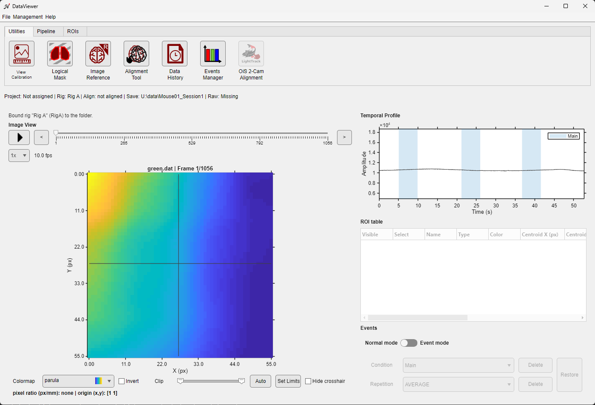

DataViewer is the main umIT application. In one window it imports recordings, displays image time series and their temporal signals, runs processing pipelines, and creates and measures regions of interest (ROIs). Everything else in umIT is reached from it.

DataViewer;
DataViewer("C:\data\session\green.dat");
DataViewer("FilePath","C:\data\session\result.umt");The User interface page describes every menu, tab and control.
| Source | Required information | Behavior |
|---|---|---|
| .dat | The file's own header | Stores one image channel or result. Its header describes its axes, sizes, data type and frame rate. |
| Image-kind .umt | A compatible image entry | Stores results whose dimensions or origin do not fit a .dat file, such as one map per condition or data combined across recordings. The file carries the metadata needed to describe each entry. |
This two-file framework keeps large, equally sized continuous channels simple while allowing smaller processed results—such as amplitude maps or event averages—to describe their own dimensions and labels.
The line below the toolbar summarizes the loaded Save Folder, for example Project: Not assigned | Rig: Rig A | Align: not aligned | Save: … | Raw: …. Hover over it for details (binding state, rig ledger state, alignment reference). Binding problems found when the data are loaded are also reported in the status line above the image.
| Part | Values |
|---|---|
| Project | The project, subject and session the folder is bound to, or Not assigned. See Project and session integration. |
| Rig | The folder's rig, read from its rig ledger (see Folder rig). |
| Align | aligned once an image alignment was applied to the folder, otherwise not aligned. The tooltip names the reference and when it was applied. See Image Alignment Tool. |
| Save / Raw | The Save Folder and the Raw Folder recorded for the data (Missing when unknown). |
Two optional resources, reached from the Management menu, support larger studies and specific analyses. Neither is needed to view, process or measure data.
DataViewer is designed for basic exploration, so you do not need to save every display change. Frame position, colormap, clipping, crosshair position, and most previews last only for the current session. The app saves only metadata that must remain associated with the Save Folder, such as confirmed image calibration, coordinate origin, logical mask, Raw Folder location, and ignored event selections.
Processed images and newly created ROIs are not saved automatically. Use the relevant save or export command when you need to keep them. See Processing and export and Save Folder metadata files.